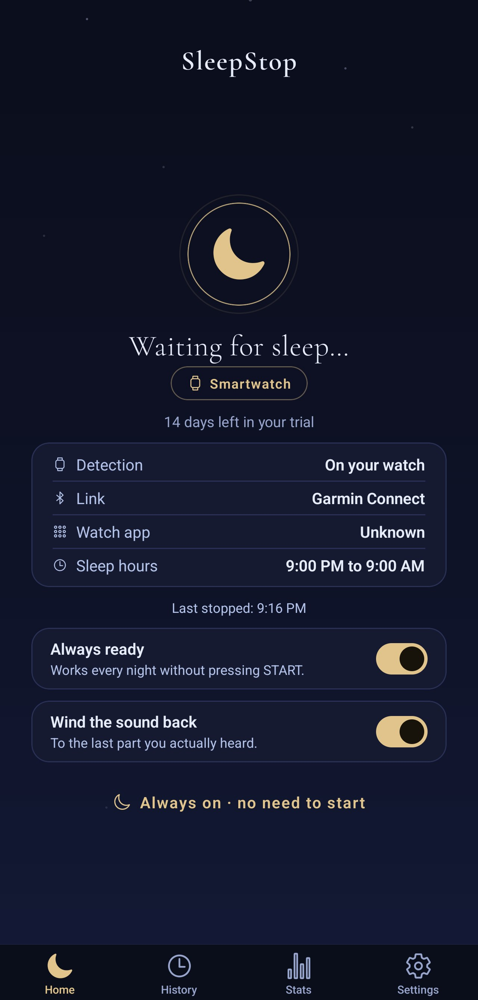
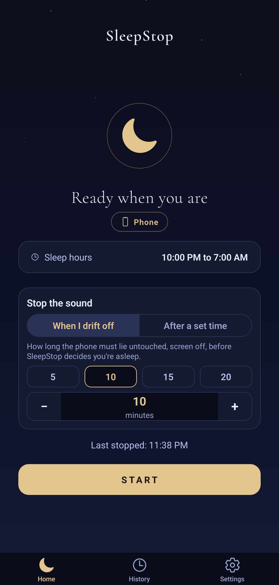
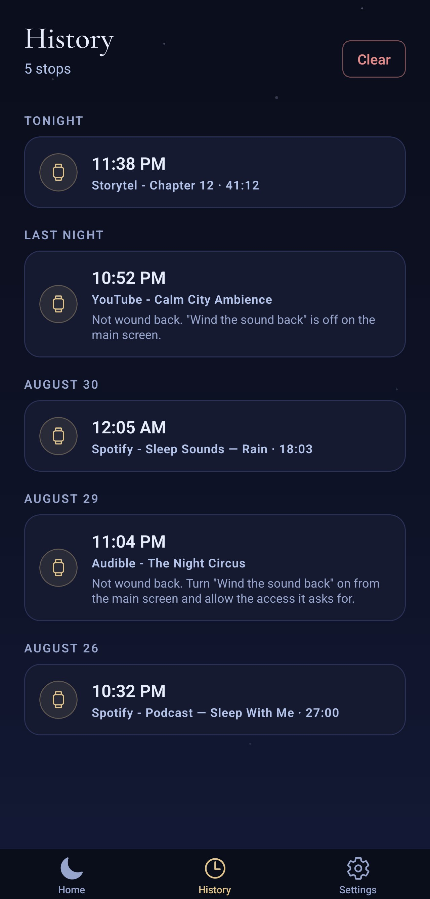
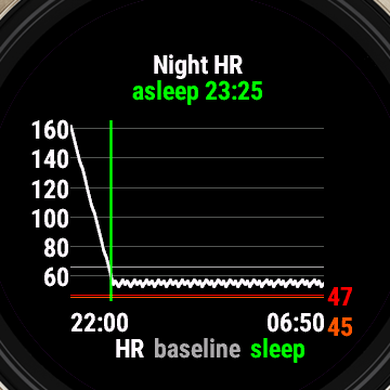
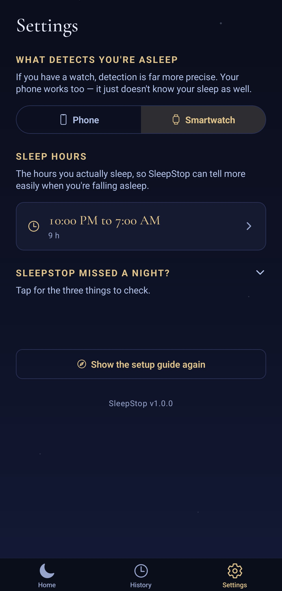

Never lose your place in an audiobook again.
Falling asleep to something? SleepStop quietly stops it - music, audiobook, a podcast, whatever you left playing. A smartwatch notices the moment you drift off; no watch, and a simple timer does the job instead. Either way, you wake up right where you left off.
What it is
A quiet helper for anyone who falls asleep listening.
Set it up once and forget it - SleepStop watches for sleep and pauses your audio so nothing plays on into the night.
- Notices when you're out - a Smartwatch reads your heart rate and stillness; no watch, and your phone can sense the same stillness on its own, or you can just set a timer.
- Mutes any audio - Music, videos, podcasts, audiobooks.
- Winds the sound back - switch it on and it picks up from before you drifted off, stepping into the previous chapter if that is where you were.
- Runs in the background - arm once, no nightly launch.
- Private by design - everything stays on your own devices.
- No account, no ads, no cloud.
- Optional "always ready" mode - pause on sleep without pressing start.
- Got it wrong? One tap undoes it - your audio resumes right where it stopped.
How it works
Three steps, then it's automatic.
Choose how it notices
Wearing a smartwatch? It follows your heart rate and stillness in the background. Just your phone? It can sense that same stillness on its own - or skip the guessing and set a plain timer instead.
It works out you're asleep
Watch or phone, it waits until it's actually confident - not just a quiet moment - so it won't stop your audiobook because you paused to think. Went with a timer instead? It just counts down.
Your audio stops
Your phone pauses whatever's playing - and can wind the sound back to before you drifted off, so you wake up right where you left off.

With a Smartwatch

Just your phone
Home - with a watch, or without one
Set it and forget it
Arm it once, not every night.
With a Smartwatch, turn on "always ready" and SleepStop waits quietly in the background - no opening the app before bed. Just your phone? Pick "when I drift off" or "after a set time" on the very same screen, and press start when you're ready to sleep.


History on your phone · the night's trace on your watch
See your night
Wake up and see what happened.
Every stop lands in your history, timestamped - with a plain-language note if something couldn't be wound back. Open a night to see the heart-rate trace your watch recorded overnight - where it settled, and the moment it decided you were asleep.

Settings - pick your source, set your hours
Tuned to your body
"Asleep" means asleep for you.
Choose a Smartwatch or just your phone right here, and tell SleepStop the hours you actually sleep. With a watch, detection tunes itself to your own resting heart rate rather than a one-size-fits-all number - it keeps sharpening itself the more real nights it sees, and telling it your actual sleep hours speeds that up.
From the maker
I built SleepStop for one small, nightly annoyance: I fall asleep to audiobooks, and I'd wake up to find the story had played on for hours - with no idea where I'd drifted off.
Sleep timers never fit. Some nights I'm out in ten minutes, some nights not at all - a fixed timer either cuts the story short or lets it run all night. So I made my watch do the noticing instead. When it sees me fall asleep, it quietly tells my phone to pause, and in the morning I'm right where I left off.
It's an independent, one-person project, and I'm still refining it night by night. If your nights sound like mine, I'd love for you to try it and tell me how it goes.
- Wojciech
Calmer nights, one tap away.
Launching soon on the Garmin Connect IQ Store and Google Play. Leave your address and we'll write to you the day it lands.
Join the waitlist